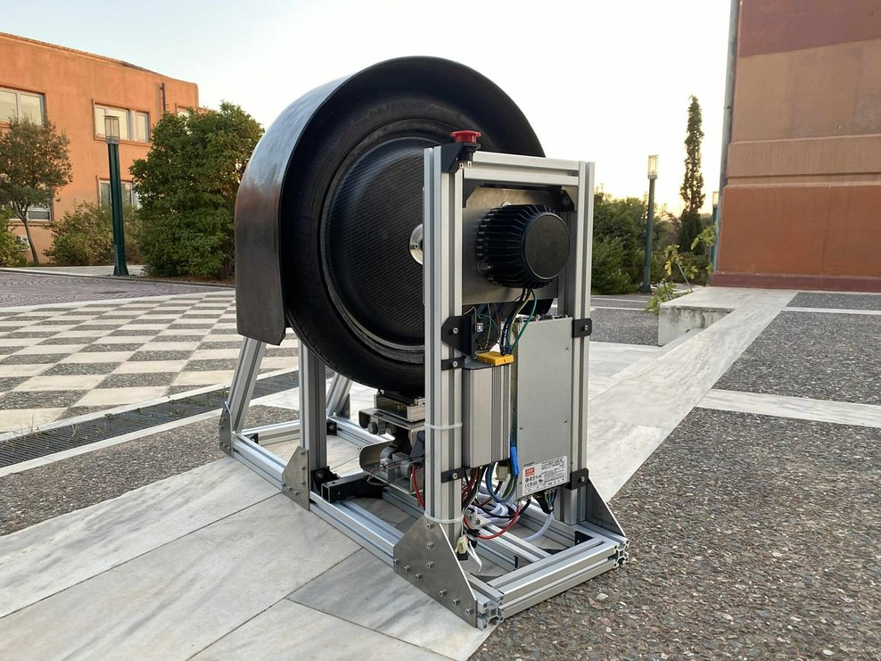
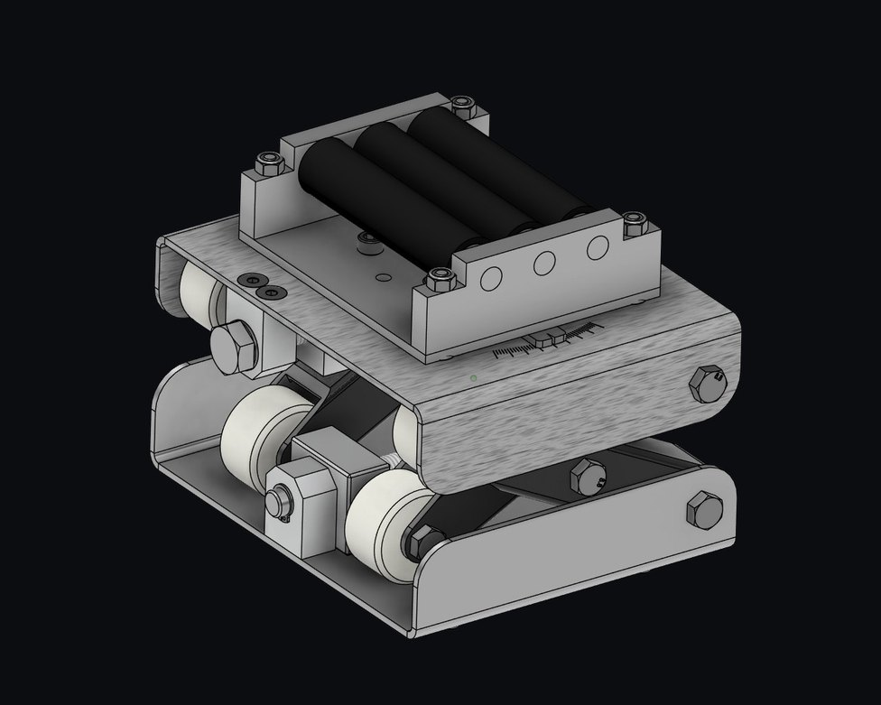
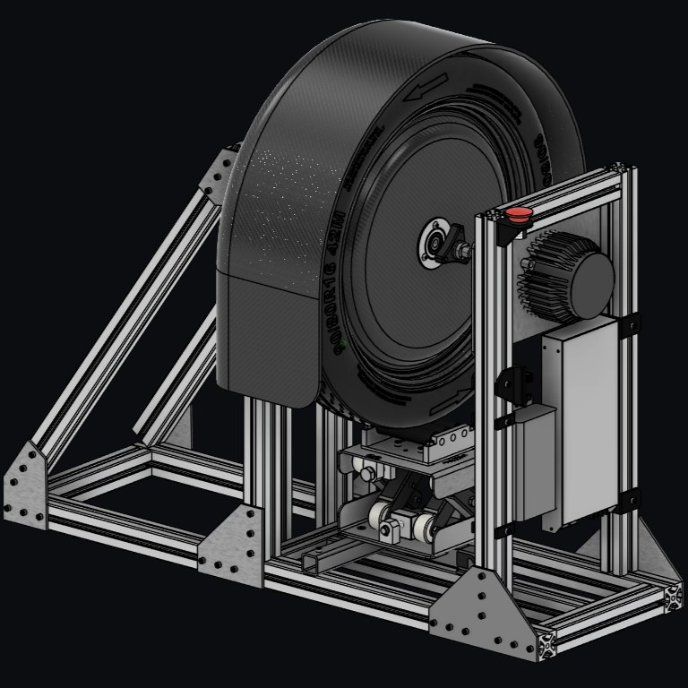
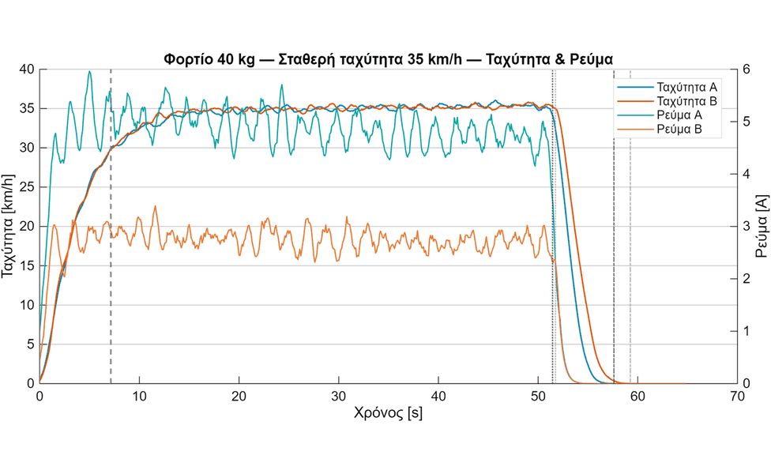
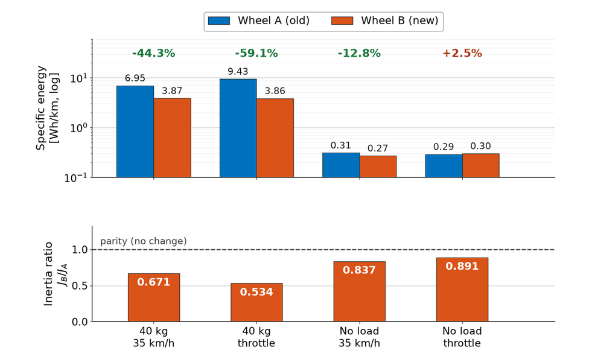

TUCer / Diploma thesis · Technical University of Crete
Wheel Test Bench.
A multi-purpose instrumented rig, designed and built to experimentally validate the CFRP wheel — energy consumption, rotational inertia, and structural strength, all on one rig with custom PID control firmware.

FIG. 01 — Test bench, assembled and ready for testing
Mechanical design
The frame is built from T-slot aluminium profile — reconfigurable without permanent machining, and precise enough to align the motor axis with the wheel under test. Vertical load comes from a screw-driven scissor-lift that presses the tyre onto a contact surface; a rotational joint adds lateral load for cornering scenarios. A force sensor monitors the applied load throughout.
The wheel mounts replicate the vehicle's own mounts for a quick swap between wheels. The rig carries a composite debris-containment dome and a hardware E-STOP (normally-closed loop, immediate PWM cutoff). Every part was made in the school machine shop with basic operations — drilling, milling, turning — so the whole rig stays serviceable.
Every new-design wheel run through this rig was first cured in the team's purpose-built curing oven.

Electronics & firmware

A 48 V, 1 kW supply drives a 750 W BLDC motor coaxial with the wheel. An Arduino Uno is the central controller: it reads a Hall-effect current sensor (self-zeroing at boot), a photo-interrupter tachometer, and the load cell, then streams 10 Hz CSV telemetry over serial — time, mode, reference and measured speed, throttle, voltages, raw and filtered current, RPM, fault and E-STOP state.
The firmware I wrote supports three modes — manual throttle, closed-loop PID speed hold, and linear speed-ramp profiles — with derivative-on-measurement to avoid setpoint kick, conditional integration with rail-aware anti-windup, and a throttle slew limiter, all tunable live over serial. A companion Python script automates batches of runs, detecting when the wheel has actually stopped before starting the next repetition.
Experiment protocol
Old and new wheels were run through four repeated scenarios — {no load, 40 kg} × {constant throttle, constant 35 km/h} — for statistical reliability. Each run's telemetry was converted to SI units, split into drive/steady/decel phases by throttle and acceleration thresholds, then integrated over time: current and power to charge (Ah) and energy (Wh), speed to distance, with energy divided by distance giving Wh/km.
Rotational inertia was estimated by fitting the dynamics equation α = A·I − β1ω − β2ω² − β3 by ordinary least squares against every drive-phase sample, where A ≈ kt/J. With the same motor torque constant and gains, comparing A between wheels gives the estimated inertia ratio Jnew/Jold ≈ Aold/Anew, where I is current, α angular acceleration and ω angular velocity, with a 95% confidence interval from the log-ratio's standard error. Fit quality across the four experiments was R² ≈ 0.69–0.84.

Results

Under 40 kg load, the new wheel used 44.3% less energy at constant speed (6.95 → 3.87 Wh/km) and 59.1% less under constant-throttle acceleration (9.43 → 3.86 Wh/km). Without load the gap narrowed, as expected — rolling losses dominate less of the total. The inertia ratio Jnew/Jold stayed below 1 in all four scenarios (0.53–0.89), consistent with the wheel's own mass reduction.
Strength testing on the same bench: a pressure test held 20% over operating pressure with no cracks or deformation on inspection, and a fatigue test ran 40 kg at maximum speed for a duration equal to three race lengths with no visible damage afterwards.
Caveat, stated in the thesis itself: applied load wasn't perfectly matched between wheels in the loaded scenarios (25–40 kg vs. 20–40 kg, due to eccentricity), so the loaded energy comparisons are read with that reservation.